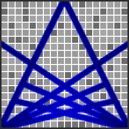

Brandon Sayler
The noblest question in the world is: What good may I do in it? He who has a why to live can bear almost any how. The reasonable man adapts himself to the world; the unreasonable one persists in trying to adapt the world to himself. Therefore all progress depends on the unreasonable man. Poetry is when an emotion has found its thought and the thought has found words. Somewhere, something incredible is waiting to be known. Any sufficiently advanced technology is indistinguishable from magic. Not only is the universe stranger than we imagine, it is stranger than we can imagine. Imagination is more important than knowledge. Knowledge is limited. Imagination encircles the world. We are all in the gutter, but some of us are looking at the stars. Do not go where the path may lead, go instead where there is no path and leave a trail. Benjamin Franklin Friedrich Nietzsche George Bernard Shaw Robert Frost Carl Sagan Arthur C. Clarke Arthur Eddington Albert Einstein Oscar Wilde Ralph Waldo Emerson